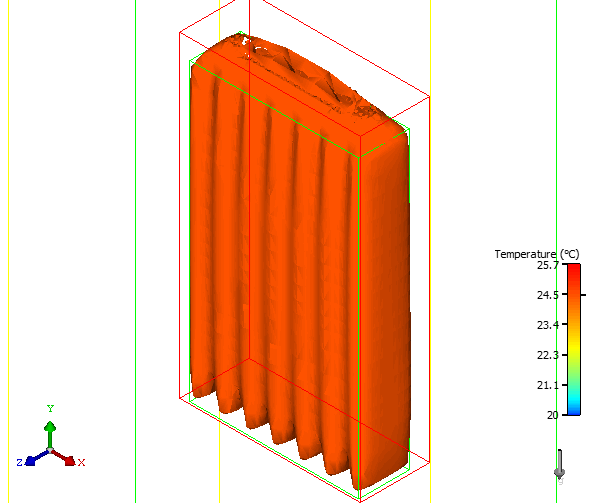

An isosurface plot is
a surface joining all points which have the same value for a given
variable.
Procedure
- Click the Create Isosurface icon
- You can customize the plot by changing values
and settings in the plot property sheet.
Results
The first isosurface
plot created is named Isosurface. Subsequent plots are named Isosurface n.
Examples
Figure 1. Isosurface Example 